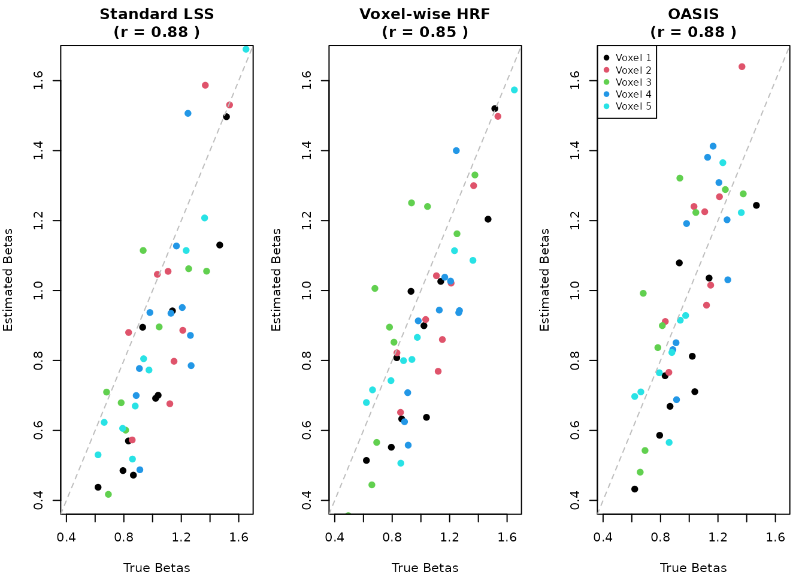

Voxel-wise HRF Modeling with fmrilss
fmrilss Development Team
2025-10-31
voxel-wise-hrf.RmdWhy HRF Variability Matters
Voxel-wise HRF modeling addresses spatial and subject-specific differences in the hemodynamic response that can bias trial-wise estimates. Vascular properties, neurovascular coupling, and acquisition protocols all influence the HRF, so relying on a single canonical shape can misrepresent activation patterns.
This vignette shows how to estimate voxel-specific HRFs and incorporate them into LSS analyses. Familiarity with the core LSS workflow and fmrihrf basics is assumed.
Alternative approach: For library-constrained
voxel-specific HRF estimation with computational efficiency, see
Shared-Basis HRF Matching (SBHM) in the dedicated SBHM
vignette (vignette("sbhm", package = "fmrilss")). SBHM
provides interpretable per-voxel HRF assignments while being 5-20x
faster than fully unconstrained voxel-wise estimation.
library(fmrilss)
library(fmrihrf)
set.seed(123)
# Helper function to create design matrix using fmrihrf API
# (design_matrix is not exported from fmrihrf, so we create a wrapper)
design_matrix <- function(sframe, conditions, tr_per_trial = FALSE) {
# Get block info from sframe
n_blocks <- length(fmrihrf::blocklens(sframe))
if (tr_per_trial) {
# Create trial-wise design (one column per trial)
X_list <- list()
for (cond in conditions) {
n_trials <- length(cond$onsets)
# Each trial gets its own regressor
X_trial <- fmrihrf::regressor_design(
onsets = cond$onsets,
fac = factor(1:n_trials), # Each trial is its own level
block = rep(1, n_trials), # Assume single block for simplicity
sframe = sframe,
hrf = cond$hrf,
duration = if (!is.null(cond$duration)) cond$duration else 0,
span = if (!is.null(cond$span)) cond$span else 30,
precision = 0.1,
method = "conv",
summate = FALSE # Don't sum across trials
)
X_list[[length(X_list) + 1]] <- X_trial
}
X <- do.call(cbind, X_list)
} else {
# Create aggregate design (one column per condition)
X_list <- list()
for (cond in conditions) {
n_trials <- length(cond$onsets)
# All trials in same condition get summed
X_cond <- fmrihrf::regressor_design(
onsets = cond$onsets,
fac = factor(rep(1, n_trials)), # All trials same level
block = rep(1, n_trials),
sframe = sframe,
hrf = cond$hrf,
duration = if (!is.null(cond$duration)) cond$duration else 0,
span = if (!is.null(cond$span)) cond$span else 30,
precision = 0.1,
method = "conv",
summate = TRUE # Sum across trials in condition
)
X_list[[length(X_list) + 1]] <- X_cond
}
X <- do.call(cbind, X_list)
}
list(X = as.matrix(X))
}Building Intuition Through Simulation
The best way to understand the impact of HRF variability is to see it in action. Let’s create a controlled simulation where we know the ground truth and can observe how different analysis approaches perform.
Creating Data with Variable HRFs
We’ll simulate an experiment with rapid stimulus presentation, where different voxels have subtly different HRF characteristics. This mimics what might happen when analyzing data from regions with different vascular properties:
# Simulation parameters
n_time <- 200 # Time points
n_vox <- 5 # Number of voxels
TR <- 1.0 # Repetition time
# Create sampling frame
sframe <- fmrihrf::sampling_frame(blocklens = n_time, TR = TR)
# Rapid, jittered event train with ISI ~ U(3, 9) seconds
set.seed(123)
start_time <- 10
isi <- runif(200, min = 3, max = 9) # generous upper bound
onsets_cont <- c(start_time, start_time + cumsum(isi))
onsets <- onsets_cont[onsets_cont < (n_time - 20)] # leave tail for HRF span
n_trials <- length(onsets)
events <- data.frame(
onset = onsets,
duration = rep(1, n_trials),
condition = rep("task", n_trials)
)
# Generate voxel-specific HRF parameters
# Each voxel has slightly different HRF characteristics
voxel_hrfs <- list()
for (v in 1:n_vox) {
# Vary peak time and width across voxels
peak_shift <- (v - 3) * 0.5 # Range: -1 to +1 seconds
width_scale <- 1 + (v - 3) * 0.1 # Range: 0.8 to 1.2
# Create modified HRF parameters
# Use SPMG1 as base and modify peak and undershoot
base_hrf <- HRF_SPMG1
# Modify the HRF parameters
# SPMG1 uses double gamma with peak around 5s and undershoot around 15s
voxel_hrfs[[v]] <- fmrihrf::HRF(
fun = function(t) {
# Shift the peak time
t_shifted <- t - peak_shift
# Apply width scaling (preserve area by multiplying by scale)
base_response <- base_hrf(t_shifted / width_scale) * width_scale
base_response
},
name = paste0("voxel_", v, "_hrf"),
span = attr(base_hrf, "span"),
nbasis = attr(base_hrf, "nbasis")
)
}
# Generate true betas for each trial and voxel
true_betas <- matrix(rnorm(n_trials * n_vox, mean = 1, sd = 0.3),
nrow = n_trials, ncol = n_vox)
# Create time series data
Y <- matrix(0, n_time, n_vox)
# For each voxel, create signal with voxel-specific HRF
for (v in 1:n_vox) {
# Create design matrix for this voxel
dm <- design_matrix(
sframe = sframe,
conditions = list(
list(onsets = events$onset,
hrf = voxel_hrfs[[v]],
name = "task")
),
tr_per_trial = TRUE
)
# Generate signal for this voxel
Y[, v] <- dm$X %*% true_betas[, v]
}
# Add realistic noise with AR(1) structure
noise_sd <- 0.5
ar_coef <- 0.3
for (v in 1:n_vox) {
# Generate independent innovations
innovations <- rnorm(n_time, sd = noise_sd)
# Apply AR(1) process
noise <- numeric(n_time)
noise[1] <- innovations[1]
for (t in 2:n_time) {
noise[t] <- ar_coef * noise[t-1] + sqrt(1 - ar_coef^2) * innovations[t]
}
Y[, v] <- Y[, v] + noise
}
# Name the voxels
colnames(Y) <- paste0("V", 1:n_vox)
cat("Created synthetic data:\n")
#> Created synthetic data:
cat(" Time points:", n_time, "\n")
#> Time points: 200
cat(" Trials:", n_trials, "\n")
#> Trials: 26
cat(" Voxels:", n_vox, "\n")
#> Voxels: 5
cat(" Signal-to-noise ratio:", round(var(Y[,1] - noise) / var(noise), 2), "\n")
#> Signal-to-noise ratio: 5.76The Standard Approach and Its Limitations
When we apply standard LSS with a canonical HRF to data that actually contains HRF variability, we’re making an assumption that may not hold. Let’s see what happens:
# Create design matrix with canonical HRF
dm_standard <- design_matrix(
sframe = sframe,
conditions = list(
list(onsets = events$onset,
hrf = HRF_SPMG1, # Canonical HRF for all voxels
name = "task")
),
tr_per_trial = TRUE
)
# Run standard LSS
standard_betas <- lss(Y, dm_standard$X, method = "r_optimized")
cat("Standard LSS beta estimates (first 3 trials, all voxels):\n")
#> Standard LSS beta estimates (first 3 trials, all voxels):
print(round(standard_betas[1:3, ], 2))
#> V1 V2 V3 V4 V5
#> Trial_1 0.41 0.56 0.74 0.73 0.39
#> Trial_2 1.08 1.27 1.05 1.38 1.21
#> Trial_3 1.02 0.51 1.13 0.47 0.89Standard LSS treats every voxel as if it shared the same HRF, so deviations from that template translate into biased betas.
Estimating Voxel-Specific HRFs
To account for HRF variability, we need to first estimate each voxel’s HRF characteristics. One powerful approach uses a multi-basis set that can capture different aspects of HRF variation. The SPM software popularized a three-component basis set consisting of the canonical HRF, its temporal derivative (capturing shifts in peak time), and its dispersion derivative (capturing changes in width):
# Step 1: Estimate voxel-specific HRF using multi-basis approach
# We'll use SPMG3 which includes canonical HRF plus temporal and dispersion derivatives
# Create multi-basis design matrix
dm_multibasis <- design_matrix(
sframe = sframe,
conditions = list(
list(onsets = events$onset,
hrf = HRF_SPMG3, # 3-basis set
name = "task")
),
tr_per_trial = FALSE # Aggregate for HRF estimation
)
# Estimate HRF basis weights for each voxel
hrf_weights <- matrix(NA, 3, n_vox) # 3 basis functions
for (v in 1:n_vox) {
# Simple GLM to estimate basis weights
fit <- lm(Y[, v] ~ dm_multibasis$X - 1)
hrf_weights[, v] <- coef(fit)
}
cat("Estimated HRF basis weights (3 bases x", n_vox, "voxels):\n")
#> Estimated HRF basis weights (3 bases x 5 voxels):
print(round(hrf_weights, 2))
#> [,1] [,2] [,3] [,4] [,5]
#> [1,] 1.31 1.34 1.49 1.47 1.38
#> [2,] -1.33 -1.21 -1.01 -1.25 -1.01
#> [3,] 1.23 1.61 1.32 1.68 1.31
# Normalize weights (optional, for interpretation)
hrf_weights_norm <- sweep(hrf_weights, 2, hrf_weights[1,], "/")
cat("\nNormalized weights (relative to canonical):\n")
#>
#> Normalized weights (relative to canonical):
print(round(hrf_weights_norm, 2))
#> [,1] [,2] [,3] [,4] [,5]
#> [1,] 1.00 1.0 1.00 1.00 1.00
#> [2,] -1.02 -0.9 -0.68 -0.85 -0.73
#> [3,] 0.94 1.2 0.89 1.14 0.95The basis weights describe latency and width shifts relative to the canonical HRF: the temporal derivative tracks peak timing and the dispersion derivative tracks response width.
Applying Voxel-Specific HRFs in LSS
With HRF estimates in hand, we can now perform LSS using each voxel’s specific hemodynamic response profile. This two-stage approach first characterizes the HRF, then uses that characterization for more accurate trial-wise estimation:
# For demonstration, we'll use a simplified approach
# In practice, you might use lss_with_hrf() with the appropriate backend
voxel_betas <- matrix(NA, n_trials, n_vox)
for (v in 1:n_vox) {
# Create voxel-specific design matrix using estimated weights
# Weight the basis functions by the estimated coefficients
X_voxel <- matrix(0, n_time, n_trials)
for (trial in 1:n_trials) {
# Create trial-specific regressors for each basis
dm_trial <- design_matrix(
sframe = sframe,
conditions = list(
list(onsets = events$onset[trial],
hrf = HRF_SPMG3,
name = "trial")
),
tr_per_trial = FALSE
)
# Combine bases using voxel-specific weights
X_voxel[, trial] <- dm_trial$X %*% hrf_weights[, v]
}
# Run LSS for this voxel with its specific HRF
voxel_betas[, v] <- lss(Y[, v, drop = FALSE], X_voxel, method = "r_optimized")
}
cat("Voxel-wise HRF LSS beta estimates (first 3 trials, all voxels):\n")
#> Voxel-wise HRF LSS beta estimates (first 3 trials, all voxels):
print(round(voxel_betas[1:3, ], 2))
#> [,1] [,2] [,3] [,4] [,5]
#> [1,] 0.61 0.78 0.73 0.86 0.55
#> [2,] 1.01 1.15 0.73 0.96 0.95
#> [3,] 0.90 0.64 0.98 0.57 0.84The OASIS Alternative
The OASIS method provides an elegant alternative that can handle HRF estimation and LSS in a unified framework. Rather than requiring separate stages, OASIS incorporates HRF flexibility directly into the estimation process, often with improved computational efficiency:
# OASIS can automatically handle HRF estimation and LSS in one step
oasis_betas <- lss(
Y = Y,
X = NULL,
method = "oasis",
oasis = list(
design_spec = list(
sframe = sframe,
cond = list(
onsets = events$onset,
hrf = HRF_SPMG3, # Multi-basis HRF
span = 30
)
),
ridge_mode = "fractional",
ridge_x = 0.01, # Small ridge for stability
ridge_b = 0.01
)
)
# OASIS returns results for each basis function
# Extract canonical component (first basis)
oasis_canonical <- oasis_betas[seq(1, nrow(oasis_betas), by = 3), ]
cat("OASIS beta estimates (canonical component, first 3 trials):\n")
#> OASIS beta estimates (canonical component, first 3 trials):
print(round(oasis_canonical[1:3, ], 2))
#> V1 V2 V3 V4 V5
#> Trial_1 0.69 0.92 0.98 1.23 0.71
#> Trial_4 1.14 1.45 0.95 1.29 1.03
#> Trial_7 1.36 0.92 1.34 0.88 1.20OASIS handles the HRF expansion and LSS solve in one pass, which limits redundant projections in dense event-related designs.
Evaluating the Approaches
Let’s quantitatively compare how well each method recovers the true beta values we used to generate our synthetic data:
# Calculate correlations with true betas
cor_standard <- cor(as.vector(standard_betas), as.vector(true_betas))
cor_voxel <- cor(as.vector(voxel_betas), as.vector(true_betas))
cor_oasis <- cor(as.vector(oasis_canonical), as.vector(true_betas))
# Calculate RMSE
rmse_standard <- sqrt(mean((standard_betas - true_betas)^2))
rmse_voxel <- sqrt(mean((voxel_betas - true_betas)^2))
rmse_oasis <- sqrt(mean((oasis_canonical - true_betas)^2))
# Create comparison table
comparison <- data.frame(
Method = c("Standard LSS", "Voxel-wise HRF", "OASIS"),
Correlation = round(c(cor_standard, cor_voxel, cor_oasis), 3),
RMSE = round(c(rmse_standard, rmse_voxel, rmse_oasis), 3)
)
print(comparison)
#> Method Correlation RMSE
#> 1 Standard LSS 0.592 0.385
#> 2 Voxel-wise HRF 0.740 0.233
#> 3 OASIS 0.684 0.473
# Visualization
par(mfrow = c(1, 3), mar = c(4, 4, 3, 1))
# Standard LSS
plot(true_betas, standard_betas,
xlab = "True Betas", ylab = "Estimated Betas",
main = paste("Standard LSS\n(r =", round(cor_standard, 2), ")"),
pch = 19, col = rep(1:n_vox, each = n_trials),
xlim = range(true_betas), ylim = range(true_betas))
abline(0, 1, lty = 2, col = "gray")
# Voxel-wise HRF
plot(true_betas, voxel_betas,
xlab = "True Betas", ylab = "Estimated Betas",
main = paste("Voxel-wise HRF\n(r =", round(cor_voxel, 2), ")"),
pch = 19, col = rep(1:n_vox, each = n_trials),
xlim = range(true_betas), ylim = range(true_betas))
abline(0, 1, lty = 2, col = "gray")
# OASIS
plot(true_betas, oasis_canonical,
xlab = "True Betas", ylab = "Estimated Betas",
main = paste("OASIS\n(r =", round(cor_oasis, 2), ")"),
pch = 19, col = rep(1:n_vox, each = n_trials),
xlim = range(true_betas), ylim = range(true_betas))
abline(0, 1, lty = 2, col = "gray")
legend("topleft", legend = paste("Voxel", 1:n_vox),
col = 1:n_vox, pch = 19, cex = 0.8)
Points closer to the diagonal line indicate better recovery of the true betas.
When to Consider Voxel-wise HRF Modeling
Use voxel-wise HRF modeling when: - regions differ in vascular architecture (e.g., motor vs. visual cortex); - cohorts show altered neurovascular coupling (aging, clinical populations, medication effects); - high-resolution acquisitions expose layer or column specific responses; - sessions are long enough for HRF characteristics to drift over time.
Computational Strategies for Large-Scale Analysis
Whole-brain analyses are expensive, so match the backend to the workload:
# C++ backend for medium-sized data
betas_cpp <- lss(Y, X, method = "cpp_optimized")
# For very large data with multiple cores
# Removed example of parallel backend to reduce clutter
# OASIS method is often fastest for complex designs
betas_oasis <- lss(Y, X = NULL, method = "oasis",
oasis = list(design_spec = design_spec))Session Info
#> R version 4.5.1 (2025-06-13)
#> Platform: x86_64-pc-linux-gnu
#> Running under: Ubuntu 24.04.3 LTS
#>
#> Matrix products: default
#> BLAS: /usr/lib/x86_64-linux-gnu/openblas-pthread/libblas.so.3
#> LAPACK: /usr/lib/x86_64-linux-gnu/openblas-pthread/libopenblasp-r0.3.26.so; LAPACK version 3.12.0
#>
#> locale:
#> [1] LC_CTYPE=C.UTF-8 LC_NUMERIC=C LC_TIME=C.UTF-8
#> [4] LC_COLLATE=C.UTF-8 LC_MONETARY=C.UTF-8 LC_MESSAGES=C.UTF-8
#> [7] LC_PAPER=C.UTF-8 LC_NAME=C LC_ADDRESS=C
#> [10] LC_TELEPHONE=C LC_MEASUREMENT=C.UTF-8 LC_IDENTIFICATION=C
#>
#> time zone: UTC
#> tzcode source: system (glibc)
#>
#> attached base packages:
#> [1] stats graphics grDevices utils datasets methods base
#>
#> other attached packages:
#> [1] fmrihrf_0.1.0.9000 fmrilss_0.1.0
#>
#> loaded via a namespace (and not attached):
#> [1] Matrix_1.7-3 gtable_0.3.6 jsonlite_2.0.0
#> [4] compiler_4.5.1 Rcpp_1.1.0 assertthat_0.2.1
#> [7] jquerylib_0.1.4 splines_4.5.1 systemfonts_1.3.1
#> [10] scales_1.4.0 textshaping_1.0.4 uuid_1.2-1
#> [13] yaml_2.3.10 fastmap_1.2.0 lattice_0.22-7
#> [16] ggplot2_4.0.0 R6_2.6.1 labeling_0.4.3
#> [19] knitr_1.50 desc_1.4.3 bslib_0.9.0
#> [22] RColorBrewer_1.1-3 rlang_1.1.6 cachem_1.1.0
#> [25] xfun_0.53 fs_1.6.6 sass_0.4.10
#> [28] S7_0.2.0 viridisLite_0.4.2 memoise_2.0.1
#> [31] cli_3.6.5 withr_3.0.2 magrittr_2.0.4
#> [34] pkgdown_2.1.3 digest_0.6.37 grid_4.5.1
#> [37] bigmemory.sri_0.1.8 lifecycle_1.0.4 bigmemory_4.6.4
#> [40] vctrs_0.6.5 evaluate_1.0.5 glue_1.8.0
#> [43] farver_2.1.2 numDeriv_2016.8-1.1 fmriAR_0.1.0
#> [46] ragg_1.5.0 purrr_1.1.0 rmarkdown_2.30
#> [49] tools_4.5.1 htmltools_0.5.8.1Choose the backend according to data size and available hardware: R implementations work for pilot subsets, while whole-brain studies typically require the optimized C++ path or OASIS.
Choosing the Right Method for Your Study
Method selection guidelines: - lss() with a canonical
HRF is sufficient when responses are expected to be homogeneous and
compute needs are modest; - voxel-wise HRF LSS prioritizes accuracy when
anatomy or pathology implies heterogeneous responses; - OASIS is
preferred for rapid-event designs or when you want a single-step solve
with HRF flexibility and ridge control.
Practical Recommendations
Practical recommendations: - validate HRF assumptions with independent data or held-out runs; - check that the signal-to-noise ratio supports estimation of additional HRF parameters; - add complexity only after simpler models prove insufficient; - record HRF modeling choices for reproducibility.
Looking Forward
Voxel-wise HRF modeling improves trial-wise beta estimation by accounting for spatial variability in the hemodynamic response. The fmrilss pipeline is designed to incorporate newer HRF estimation strategies as they appear in the literature.
Further Reading
-
vignette("getting_started")for LSS basics -
vignette("oasis_method")for advanced OASIS features -
?fmrihrffor HRF model options - Mumford et al. (2012) for core LSS theory